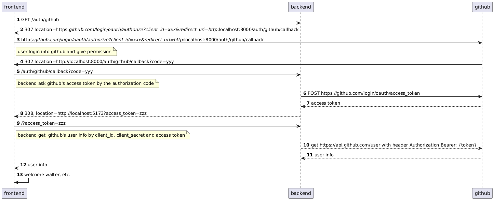

搞懂 OAuth 还得用代码说话
Posted on Tue 08 April 2025 in Journal
| Abstract | 搞懂 OAuth 还得用代码说话 |
|---|---|
| Authors | Walter Fan |
| Category | learning note |
| Status | v1.0 |
| Updated | 2025-04-08 |
| License | CC-BY-NC-ND 4.0 |
搞懂 OAuth 还得用代码说话
背景知识
OAuth 是干嘛的？
OAuth2（Open Authorization 2.0）是一个授权框架，允许第三方应用在用户授权下访问其存储在另一服务上的资源，而无需共享用户的凭据（如用户名和密码）。OAuth2 广泛应用于现代互联网服务，如 Google、Facebook、GitHub 等。
一句话就是：
“用户授权某个应用，去代表自己访问另一个服务的数据。”
比如你用一个第三方应用登录，它要求“使用 GitHub 登录”，你点确认后，它就能获取你的 GitHub 头像、昵称、邮箱等信息。这时你没有把 GitHub 的密码告诉这个应用，只是给了它一个“访问你部分数据的许可证”，这个许可证就是 OAuth 发的 Access Token。
所以，OAuth 主要解决的问题是： 谁可以访问我的资源？在什么范围内？
OAuth2 的核心角色
- 资源所有者（Resource Owner）：通常是用户，拥有受保护的资源。
- 客户端（Client）：请求访问资源的第三方应用。
- 授权服务器（Authorization Server）：验证用户身份并颁发访问令牌。
- 资源服务器（Resource Server）：存储受保护的资源，并在验证访问令牌后提供资源。
OAuth2 的授权流程
OAuth2 定义了多种授权流程（Grant Types），常见的有：
- 授权码模式（Authorization Code）
- 简化模式（Implicit）
- 密码模式（Resource Owner Password Credentials）
- 客户端模式（Client Credentials）
授权码模式（Authorization Code）
这是最常用的流程，适用于有后端的 Web 应用。
步骤：
- 用户访问客户端：用户通过浏览器访问客户端应用。
- 重定向到授权服务器：客户端将用户重定向到授权服务器，请求授权。
- 用户授权：用户在授权服务器上登录并授权客户端访问资源。
- 授权码返回：授权服务器将授权码通过重定向返回给客户端。
- 客户端请求访问令牌：客户端使用授权码向授权服务器请求访问令牌。
- 颁发访问令牌：授权服务器验证授权码并颁发访问令牌。
- 访问资源：客户端使用访问令牌向资源服务器请求资源。
示例：
+--------+ +---------------+
| |--(A)- Authorization Request ->| Resource |
| | | Owner |
| |<-(B)-- Authorization Grant ---| |
| | +---------------+
| |
| | +---------------+
| |--(C)-- Authorization Grant -->| Authorization |
| Client | | Server |
| |<-(D)----- Access Token -------| |
| | +---------------+
| |
| | +---------------+
| |--(E)----- Access Token ------>| Resource |
| | | Server |
| |<-(F)--- Protected Resource ---| |
+--------+ +---------------+
以 GitHub 做身份认证
接下来我们用 GitHub 作为身份提供方（也叫 Identity Provider），通过 OAuth 授权码的方式完成登录认证。整个流程我们会分为两部分：
- 后端：FastAPI 实现 OAuth 流程
- 前端：Vue.js 展示用户信息，完成登录交互
1. 先到 GitHub 注册 OAuth 应用
访问 GitHub：
- 登录账号，进入：
Settings -> Developer Settings -> OAuth Apps -> New OAuth App - 填写信息：
- Application name：自定义
- Homepage URL：
http://localhost:5173 - Authorization callback URL：
http://localhost:8000/auth/github/callback - 注册后，记下 Client ID 和 Client Secret，后面要用。
2. 创建 FastAPI 项目
安装依赖：
pip install fastapi uvicorn httpx python-dotenv
项目结构
.
├── main.py
└── .env
.env 文件中写入 GitHub 的 Client ID 和 Secret：
GITHUB_CLIENT_ID=你的client_id
GITHUB_CLIENT_SECRET=你的client_secret
main.py 代码如下：
import os
from fastapi import FastAPI, Request, HTTPException
from fastapi.responses import RedirectResponse
from fastapi.middleware.cors import CORSMiddleware
from dotenv import load_dotenv
import httpx
load_dotenv()
app = FastAPI()
# 支持前后端跨域通信
app.add_middleware(
CORSMiddleware,
allow_origins=["http://localhost:5173"],
allow_credentials=True,
allow_methods=["*"],
allow_headers=["*"],
)
# GitHub OAuth 配置
GITHUB_CLIENT_ID = os.getenv("GITHUB_CLIENT_ID")
GITHUB_CLIENT_SECRET = os.getenv("GITHUB_CLIENT_SECRET")
GITHUB_REDIRECT_URI = "http://localhost:8000/auth/github/callback"
@app.get("/auth/github")
async def login_github():
return RedirectResponse(
f"https://github.com/login/oauth/authorize?client_id={GITHUB_CLIENT_ID}&redirect_uri={GITHUB_REDIRECT_URI}"
)
@app.get("/auth/github/callback")
async def auth_github_callback(code: str):
async with httpx.AsyncClient() as client:
response = await client.post(
"https://github.com/login/oauth/access_token",
headers={"Accept": "application/json"},
params={
"client_id": GITHUB_CLIENT_ID,
"client_secret": GITHUB_CLIENT_SECRET,
"code": code,
"redirect_uri": GITHUB_REDIRECT_URI,
},
)
if response.status_code != 200:
raise HTTPException(status_code=400, detail="获取 access token 失败")
access_token = response.json().get("access_token")
if not access_token:
raise HTTPException(status_code=400, detail="access token 为空")
# 将 token 重定向回前端
return RedirectResponse(f"http://localhost:5173?access_token={access_token}")
@app.get("/api/user")
async def get_current_user(request: Request):
auth_header = request.headers.get("Authorization")
if not auth_header:
raise HTTPException(status_code=401, detail="未提供认证信息")
token = auth_header.split(" ")[1]
async with httpx.AsyncClient() as client:
user_response = await client.get(
"https://api.github.com/user",
headers={"Authorization": f"Bearer {token}"}
)
if user_response.status_code != 200:
raise HTTPException(status_code=401, detail="token 无效")
return user_response.json()
运行后端服务：
uvicorn main:app --reload
3. 创建 Vue 项目
vue create oidc-example-frontend
cd oidc-example-frontend
npm install axios
4. 修改 App.vue（简洁登录逻辑）
<script setup>
import { ref } from 'vue'
import axios from 'axios'
const user = ref(null)
const error = ref(null)
const loginWithGitHub = () => {
window.location.href = 'http://localhost:8000/auth/github'
}
const checkAuth = async () => {
try {
const urlParams = new URLSearchParams(window.location.search)
const accessToken = urlParams.get('access_token')
if (accessToken) {
localStorage.setItem('github_access_token', accessToken)
window.history.replaceState({}, document.title, window.location.pathname)
}
const token = localStorage.getItem('github_access_token')
if (token) {
const response = await axios.get('http://localhost:8000/api/user', {
headers: { Authorization: `Bearer ${token}` }
})
user.value = response.data
}
} catch (err) {
error.value = err.response?.data?.detail || err.message
localStorage.removeItem('github_access_token')
}
}
const logout = () => {
localStorage.removeItem('github_access_token')
user.value = null
}
checkAuth()
</script>
<template>
<div>
<h1>使用 GitHub 登录</h1>
<div v-if="error" class="error">错误：{{ error }}</div>
<div v-if="user">
<h2>欢迎 {{ user.login }}</h2>
<img :src="user.avatar_url" width="80" style="border-radius: 50%;" />
<p>昵称：{{ user.name || '未提供' }}</p>
<p>GitHub：<a :href="user.html_url" target="_blank">{{ user.html_url }}</a></p>
<button @click="logout">退出</button>
</div>
<button v-else @click="loginWithGitHub">GitHub 登录</button>
</div>
</template>
<style>
.error {
color: red;
}
</style>
启动前端：
npm run serve
OAuth/OIDC 登录流程总结

@startuml
autonumber
frontend -> backend: GET /auth/github
backend -> frontend: 307 location=https://github.com/login/oauth/authorize?client_id=xxx&redirect_uri=http://localhost:8000/auth/github/callback
frontend -> github: https://github.com/login/oauth/authorize?client_id=xxx&redirect_uri=http://localhost:8000/auth/github/callback
note right frontend: user login into github and give permission
github -> frontend: 302 location=http://localhost:8000/auth/github/callback?code=yyy
frontend -> backend: /auth/github/callback?code=yyy
note right frontend: backend ask github's access token by the authorization code
backend -> github: POST https://github.com/login/oauth/access_token
github --> backend: access token
backend --> frontend: 308, location=http://localhost:5173?access_token=zzz
frontend -> backend: /?access_token=zzz
note right frontend: backend get github's user info by client_id, client_secret and access token
backend --> github: get https://api.github.com/user with header Authorization Bearer: {token}
github --> backend: user info
backend --> frontend: user info
frontend -> frontend: welcome walter, etc.
@enduml
整个流程可以简化成下面几步：
- 用户点“登录”按钮，跳转到 GitHub 授权页面
- GitHub 登录并授权后，回调到后端地址，携带一个授权码
code - 后端用授权码
code换取access_token - 后端返回 access_token 给前端
- 前端用 token 获取用户信息并展示
六、结语
纸上得来终觉浅, 绝知此事要躬行, 通过以上代码, 我们可以了解到 OAuth 的核心思想和流程, 我们可以总结出以下几点
- OAuth2的作用：
- OAuth2是一个授权框架，允许第三方应用在用户授权下访问其存储在另一服务上的资源，而无需共享用户的用户名和密码。
-
主要解决的问题是：谁可以访问我的资源？在什么范围内？
-
OAuth2的核心角色：
- 资源所有者（Resource Owner）：通常是用户，拥有受保护的资源。
- 客户端（Client）：请求访问资源的第三方应用。
- 授权服务器（Authorization Server）：验证用户身份并颁发访问令牌。
-
资源服务器（Resource Server）：存储受保护的资源，并在验证访问令牌后提供资源。
-
OAuth2的授权流程：
- 常见的授权模式有：授权码模式、简化模式、密码模式、客户端模式。
-
授权码模式是最常用的流程，适用于有后端的Web应用，具体步骤包括：
- 用户访问客户端应用。
- 客户端将用户重定向到授权服务器请求授权。
- 用户在授权服务器上登录并授权客户端访问资源。
- 授权服务器返回授权码给客户端。
- 客户端使用授权码向授权服务器请求访问令牌。
- 授权服务器验证授权码并颁发访问令牌。
- 客户端使用访问令牌向资源服务器请求资源。
-
以GitHub为例实现OAuth2登录：
- 注册OAuth应用：在GitHub上注册OAuth应用，获取
Client ID和Client Secret。 - 后端实现（FastAPI）：
- 创建FastAPI项目，处理OAuth2的授权流程。
- 提供
/auth/github和/auth/github/callback两个接口，分别用于跳转到GitHub授权页面和处理回调。 - 使用
access_token从GitHub获取用户信息。
-
前端实现（Vue.js）：
- 创建Vue.js项目，与后端交互完成登录逻辑。
- 用户点击“GitHub登录”按钮后，跳转到后端的OAuth流程。
- 登录成功后，前端使用
access_token获取并展示用户信息。
-
OAuth/OIDC登录流程总结：
- 用户点击“登录”按钮，跳转到GitHub授权页面。
- GitHub登录并授权后，回调到后端地址，携带一个授权码
code。 - 后端用授权码
code换取access_token。 - 后端返回
access_token给前端。 - 前端用
access_token获取用户信息并展示。
完整的代码请参见 ...
本作品采用知识共享署名-非商业性使用-禁止演绎 4.0 国际许可协议进行许可。